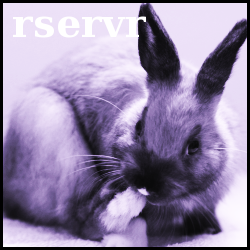

|  |
rservr - a *nix Resource ServerProject Overview - Main Page |
rservr is a *nix ("Unix®-like operating systems" such as Linux and FreeBSD) framework for large, multi-process applications. rservr is intended to help developers create large applications using several smaller, special-purpose programs by controlling their run-time structures and by facilitating control-oriented IPC between the special-purpose components.
rservr is intended to be the permeating structural entity of an application designed to utilize it. rservr functions by providing a daemonized server process for each instance of each application. All of the application's components are connected to that server and communicate with each other through it. This communication is regulated by the server to bring stability to the application as a whole, thereby increasing its reliability. Communication regulation is based on a role-based model where each of the application's processes has a discrete category within the context of the rservr system. These categories define the fundamental requirements of how each process can interact with the system.
Applications built around rservr will generally use programs with discretely-defined functionality. Ideally, an application will use separate programs to manage data retrieval, data processing, network connections, and user control over the application. The rservr system will assemble these programs as a set of processes attached to a single server based on a configuration specified at run-time, allowing for dynamic application instances.
The individual programs used in an application can be written by the application's developer in either C or C++ using the rservr API. The API provides a simple C interface between the running program and the rservr libraries. The rservr libraries manage all communication with the server based on the actions taken by the running program. Communication with other processes is routed through the server for security and "sanity" filtering.
The main purpose of the server in an rservr application is to bind third-party programs into a dynamic system to form an application. Incidentally, it must facilitate IPC while exercising security control over the application. Most of the application's processes will be created by the server itself so that it can control the process' user and group IDs (super-user applications can use multiple users and groups,) which the server strictly regulates.
The primary benefit of creating an application with rservr is the ability to modify the structure of the application while it's running. This allows the application to be assembled in a series of steps, allows isolation and correction of run-time errors, allows different instances of the application to have different structures, and lastly allows the application to be shut down incrementally.
The core rservr package includes IPC-forwarding programs that allow an application to relocate processes across network connections. These IPC forwarders allow run-time specification of security-filter plug-ins that provide address filtering, connection authentication, and transmission encryption. The core package includes filters for SRP authentication and TLS encryption, as well as user-space incoming-IP filtering.
The rservr IPC system is fully extensible. The core package includes and utilized several standardized extensions that can be used as examples for third-party extensions. The inner workings and other pertinent information about the IPC system are discussed in detail in the project's documentation (see the links below.)
October 26th, 2014: I added support for file protocols, which are primarily intended for use with configuration files. For example, you can extract a configuration file from a tar file by specifying tar://archive.tar?filename as the configuration file. Additionally, you can defer to the last-used protocol with -://filename, which will attempt to use the previous protocol in an "intelligent" manner. If the last protocol was tar://, -://filename will search the previously-used archive for filename. This is useful if you want to store the configuration for the server and configurations for one or more clients in a single archive. On the other hand, if no protocol was previously used, -:// has no effect, meaning that you should get the same behavior whether or not you extract the tar file. (Note that this functionality hasn't been documented yet.)
October 24th, 2014: The rservr project has migrated to GitHub. I did this because BerliOS.de dropped hosting for all projects in April 2014, leaving this project without a home. Some of the code might still refer to BerliOS.de, however, and I haven't come up with a new release strategy yet.
February 22nd, 2011: I added a "passthru" feature to the command forwarders that allows an existing forwarder connection to be reappropriated for raw data transfer. The primary purpose of this is to allow a connection to be made using the forwarder's security plug-ins (e.g. authentication and encryption,) and to retain that security for raw data transfer. By default, reappropriation of connections is disabled; it must be enabled in the forwarder's configuration. Clients requesting passthru can be screened by regular expressions, and passthru can be disabled entirely for individual "listen" sockets.
February 15th, 2011: I converted the entire IPC parsing system to a GNU Flex/Bison-generated parser, with internal tree structures still managed by hparser. All previous functionality is still present and client development isn't affected (command plug-in development is significantly different, however.) Flex and Bison don't need to be installed. Additionally, I merged two of the built-in libraries.
January 3rd, 2010: After about a year and a half of developing strictly on Linux, I finally got rservr working on FreeBSD again, this time with everything working. In addition, I made several important fixes for which the need became apparent when running the code on a different OS.
August 18th, 2009: I made several very important changes with this update, the most significant of which is the addition of a TLS encryption and authentication security filter for IPC forwarders. This allows secure connections between forwarders not previously possible. With this came the permanent removal of the encode/decode functions in the security filter API; encryption is now handled entirely by the send/receive functions. Combined with a kernel-space firewall and the address-filtering security filters, this new filter allows for very secure rservr systems. I also added readline support to several programs, making it much easier to reuse commands when working with the interactive rservr tools.
February 20th, 2009: Permanently migrated project hosting from SourceForge.net to BerliOS.de.
February 16th, 2009: Added a subversion repository mirror for public access. The link given can be used with svn command-line client, or you can browse the source and changes directly from the web. I'd tracked changes with CVS for quite a while; however, the structure changed too often for me to keep up. Version control restarts from just after the last beta release. Formal releases will carry the "gamma" designator, but should still be considered beta releases. The mirror repository is a copy of the repository on my development machine. I only plan to synchronize the mirror when the code compiles and runs; not between those times.
December 22nd, 2008: Added a network security filter to temporarily deny attempted reconnections by hosts disconnected for errors. This filter is a socket-forwarder plug-in intended to mitigate the effects of port scanners. After disconnecting a host for sending bad data, etc., the forwarder will notify the filter, which will tabulate the host's address. The filter will deny incoming connections from that host for a period of time specified when the filter is loaded, preventing performance degradation caused by unfriendly programs.
December 20th, 2008: First successful high-intensity network test. This required quite a bit of tuning to get it to work properly and with reproducible results. This test was performed by sending a "ping server" message from a client to the server on a remote machine 1024 times within about 3 seconds. This caused severe problems initially, but after about 10 hours of troubleshooting and with the addition of message-queue pausing I got it to reliably respond to all effective ping messages (some were discarded by the server as a self-protection measure to prevent a crash due to a backlog at the forwarder.)
December 16th, 2008: Completion of the first successful wide-area-network (WAN) test between rservr systems. This involved two machines: one with a static IP address on a controlled network and one with a dynamic wireless IP address. The machine with the static IP listened to a port and the other connected. I proceeded to poll the wireless-IP server for registered rservr services from the static-IP server, and succeeded in having the wireless-IP server automatically register a remote service with the static-IP server. Upon disconnecting the wireless-IP server, the static-IP server registered the loss of connection with no human-visible delay. While I've performed a substantial number of local-machine network tests, this was the first test between two separate machines.
December 8th, 2008: Addition of a "respawn" client. This client will monitor other clients (specified with a configuration file) and if they disconnect for any reason (e.g. crash or are killed,) this client will restart them. The respawn client is a very powerful addition to the system because it allows "self-healing" applications, which can be especially useful for remote systems.
November 29th, 2008: Addition of command substitution in configuration files. While the sematics are very limited, this provides a very powerful interface between the shell and the configuration stage of the server (and some client programs.)
November 1st, 2008: Release of the first beta version. This version contains several improvements over the last alpha version. This release marks a significant shift toward the eventual prototyping of ideal implementation methods, which will be the major focus of the beta versions. The secondary focus will be on securing super-user server instances. This release comes with a refined emphasis of purpose as a structural framework instead of merely an IPC infrastructure. Future project efforts will follow this refined philosophy.
August 7th, 2008: Release of the first fully-functional example application. This application is a very simple simulation of a home automation system. Development of this example resulted in quite a few project improvements.
April 13th, 2008: The initial versions of the project's documentation are complete. I'm performing final checks before posting the initial release. Update: Initial release posted the same day.
February 24th, 2008: Posted the first version of this front page. I'm currently working on the API reference and rewriting the guides (composting the working guides.) The first release should be out around the beginning of summer 2008.
February 18th, 2008: The core rservr package is complete and awaiting documentation. Initial release won't happen before at least the user's and application developer's guides are complete. The initial API documentation is nearly complete.
rservr Applications.(nothing available at this time) |
rservr Clients and Plug-ins.(nothing available at this time) |
This software is released under the BSD License.
Copyright (c) 2012, Kevin P. Barry
All rights reserved.
Redistribution and use in source and binary forms, with or without modification, are permitted provided that the following conditions are met:
THIS SOFTWARE IS PROVIDED BY THE COPYRIGHT HOLDERS AND CONTRIBUTORS "AS IS" AND ANY EXPRESS OR IMPLIED WARRANTIES, INCLUDING, BUT NOT LIMITED TO, THE IMPLIED WARRANTIES OF MERCHANTABILITY AND FITNESS FOR A PARTICULAR PURPOSE ARE DISCLAIMED. IN NO EVENT SHALL THE COPYRIGHT OWNER OR CONTRIBUTORS BE LIABLE FOR ANY DIRECT, INDIRECT, INCIDENTAL, SPECIAL, EXEMPLARY, OR CONSEQUENTIAL DAMAGES (INCLUDING, BUT NOT LIMITED TO, PROCUREMENT OF SUBSTITUTE GOODS OR SERVICES; LOSS OF USE, DATA, OR PROFITS; OR BUSINESS INTERRUPTION) HOWEVER CAUSED AND ON ANY THEORY OF LIABILITY, WHETHER IN CONTRACT, STRICT LIABILITY, OR TORT (INCLUDING NEGLIGENCE OR OTHERWISE) ARISING IN ANY WAY OUT OF THE USE OF THIS SOFTWARE, EVEN IF ADVISED OF THE POSSIBILITY OF SUCH DAMAGE.
I'll list your name, project, or organization here if you provide a significant contribution to the rservr Project. I'll ask before listing any individual person or private project/organization in case you don't want to be known publicly. I can't list everyone here; therefore, I'll only list those who've expended a generous amount of time or effort, so as to not trivialize major contributions.
| GNU Project | Free compiler, libc with extensive documentation, and automatic build system |
| Slackware Project | Free, stable operating system for users who insist on doing things manually |
| Eclipse Project | Free IDE, but mostly just used as a text editor |
| Bluefish Project | Free HTML editor with built-in reference documents |
| GitHub.com | Free project hosting, October 2014 - present |
| LinuxQuestions.org | Suggestions and ideas from other users |
| BerliOS.de | Free project hosting, February 2009 - April 2014 |
| SourceForge.net | Free project hosting, April 2007 - February 2009 |
| © 2008 - Kevin P. Barry | The rservr Project |